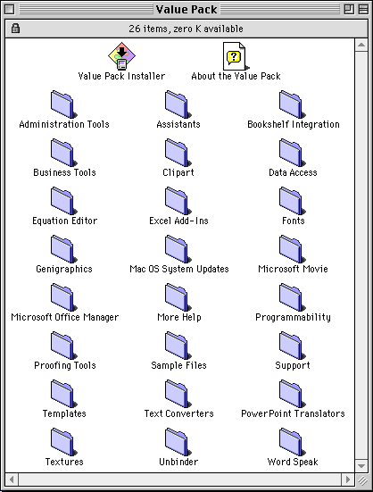

Second Quarter, 1998
Table of Contents
- Letter from the Editor
- Configuring MS Office 98/Mac
- Starting MS Office
Letter from the Editor
Any excuse to come up with a newsletter... This is a
short writeup on installing Microsoft Office 98 for the
Macintosh. Since AlliedSignal has a site license for MS
Office products, I was allowed to install a copy on my home
computer, provided that it does not get used during
business hours, when I would be using MS Office on my
trusty Centris 650.
Yeah right.
MS Office products are second rate, and the current release
is no exception. Since many decide to use Office anyways, I
feel that I should at least give some instructions on how
to install the product on people's computers at work and at
home.
Alex Morando
Newsletter Editor
Configuring MS Office 98/Mac
The very first thing you should know is that MS Office
requires a PowerPC processor and a CD-ROM drive. Those with
680X0 series machines, from the Mac Plus up to Quadra
840AVs/950s, need not apply. Although the recommended
processor speed is 120MHz, MS Office will install on any
PowerPC machine. However, I did not check to see if it
would r un on 680X0 Macs equipped with PowerPC upgrade
cards.
As mentioned in the last newsletter, MS
Office 98 for the Mac offers many features and
improvements over their previous 4.2.X version. When
the CD-ROM mounts on the desktop, you see the
following folders on the left. The top folder is the
drag-install folder, while the bottom folder is the
custom-install folder.
The drag install is just that - simply drag the
Microsoft Office 98 folder to your hard disk. The
use of self-reparing and first-run applications make sure
that you have the proper files in your System Folder
whenever any of the MS Office products is launched.
The custom installer is similar to more traditional Mac
software installers (the install engine is licensed from
Mindvision) and will allow you to specify a "light" to a
"heavy" installation, which can easily exceed 300
megabytes!
The best approach is to bypass the custom installer and
just do a drag install. This will move about 400-500 files
totaling about 72 megabytes to your Microsoft Office
98 folder. If you still have additional room, you can
choose to use the Value Pack installer and select from a
huge list of options. The Value Pack folder weighs in at an
amazing 288 megabytes, although some of that space is taken
up by free MacOS system updaters. It is recommended that
the proper MacOS updater is applied before installing MS
Office:
|
Recommended MacOS updates
|
|
|
If you have... |
Update to... |
|
7.5.X |
7.5.5 |
|
7.6 |
7.6.1 |
|
8.0 |
8.1 |
There are two other folders in the above picture. The
Microsoft Internet folder contains installers for
the Internet Explorer 4.0 web browser and the Outlook
Express 4.0 email client. My advice is to skip these two
products. Not only do they contribute to system
instability, but there are other products that do a better
job. I recommend using Netscape Navigator 4.05 for
web browsing and Eudora Light 3.1 for email;
both of these are also free from the Internet or company
servers. If you want to use Outlook Express, be sure to get
the latest version from the Microsoft web site.
The Value Pack folder contains an installer that
lets you add additional features to MS Office. The various
components that can be installed are shown below. They
include various options such as extra assistants, clip art
(pictures and movies), MS Office Manager, tutorials, and
other utilities and translators.

Asking yourself what to install within your disk space budget is a good question. I did not want to lose another 150 megabytes of disk space to things that I may not use, so I decided to only install certain features. At first, I decided to see how much disk space I would need if I installed what I wanted. I decided to take everything and justified why I did not need a specific feature.
- Bookshelf Integration - I don't own MS Bookshelf
- Data Access - I have no need to query remote databases
- Genigraphics - I don't need to use their services (PowerPoint slide making)
- MS Office Manager - it has always been unstable, even this version
- Proofing Tools - I only wanted the English version
- Programmability - I did not plan on learning Visual Basic for Applications
As you can see, I only had 144 megabytes of disk space
left, and my wish list would have taken most of it. What is
not mentioned is that the above option will place an
additional 3000+ files on your system (Clip
Art being the biggest contributor). So, I was forced to
start over and reduced my choices to the following. Going
through the info boxes on the right side, I fould out that
the Assistants took up a lot of space, each one
being between 500k to 3 megabytes. However, since they are
a nice feature of Office, I decided to keep some of the
smaller and funnier ones. I decided to forgo Business
Tools and Templates since I already had many of these
under ClarisWorks or Nisus
Writer. Clip Art was the largest module, since
it contained all the clip art from previous versions of
Office (especially PowerPoint) and also many QuickTime
movies and photos; I decided to only keep those clip art I
found interesting or useful like dividers and symbols. I
kept the Equation Editor and Excel Add-Ins
since I do a lot of number crunching and engineering
analysis, Fonts to ensure compatibility with the
Windows world, and Movie so I can use QuickTime.
|
I find it interesting that even though Microsoft professes support of QuickTime, Movie is an optional install. Drag-install users are thus discouraged from using QuickTime in their documents. |
I selected Text Converters so I can import/export
to other word processor formats. I chose Unbinder
since there is no Mac equivalent of MS Office Binders under
Windows. If you were to get a Binder file, you need this
program to break it up into smaller pieces that can be
loaded into Word/Excel/PowerPoint. Finally, I chose Word
Speak because I want my computer to talk.
As shown above, I managed to get my custom modules down to
under 50 megabytes and about 900 additional
files. I retained most of the functionality I wanted,
with emphasis on number crunching, technical documents,
compatibility (font and file format), and exploration of
new features (assistants and some clip art).
Starting MS Office
98/Mac
|
Hoverbot
|
When you launch any MS Office application for the first
time, it checks to make sure all the necessary files are
present. This requires the installation of three megabytes
of shared libraries that will be installed in your
Extensions:MS Library folder when MS Office first starts
up. On my PowerCenter Pro 210, initial (first-time)
launches took between 30-40 seconds.
However, subsequent launch times are 6 seconds for
Word and PowerPoint, and 3 seconds for Excel, which
is very comparable to the Windows versions.